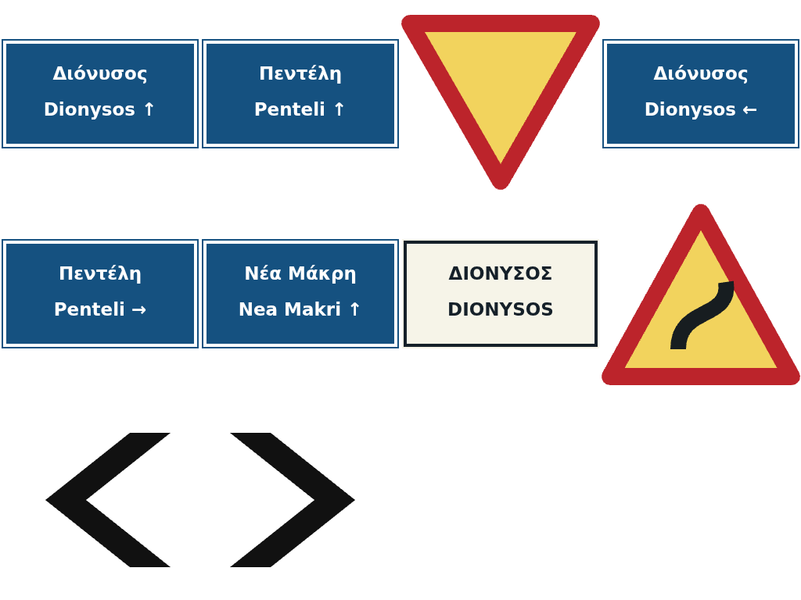

HTTP opt-in ?assetcodec=1&bakedownload=1 · full mip chains · original-image fallback · one owner-locked Off/Off look.
Retained texture storage52.00 → 34.00 MiBRiviera/Penteli block-format estimate. Megara retains the original 52 MiB library.
Riviera/Penteli texture file bodies2,225,059 → 2,352,436 bytesTranscoder/chunk startup overhead is listed separately in RESULTS.md.
Same map inputs, lossless reconstruction
| Map | Pack bytes before → after | Decode CPU ms | Peak main heap MiB | First race frame ms |
|---|
| riviera | 35,820,490 → 33,194,241 | 1012.4 → 918.6 | 489.32 → 467.88 | 22,063 → 20,892 |
| penteli | 22,843,383 → 17,073,883 | 736.5 → 687.7 | 325.85 → 272.47 | 13,594 → 12,696 |
| megara | 1,385,290 → 1,173,346 | 44.1 → 48.1 | 109.51 → 101.60 | 13,158 → 7,646 |
Node CPU: warm median of three. Penteli first-frame and heap values: medians of five interleaved pairs; other maps use the paired capture. Browser heap: sampled every 250 ms. First-frame wall time on SwiftShader is not a hardware GPU result. paired HTTP packs
Per-texture trade-offs
| Texture | Runtime | Original B | KTX2 candidate B | HTTP body B before → after | GPU MiB |
|---|
| asphalt_02_diff.webp | etc1s | 382,402 | 257,012 | 382,402 → 257,012 | 5.33 → 1.33 |
| asphalt_02_nor.webp | image | 452,932 | 1,202,828 | 452,932 → 452,932 | 5.33 → 5.33 |
| asphalt_02_arm.webp | etc1s | 229,582 | 260,246 | 229,582 → 260,246 | 5.33 → 1.33 |
| floor_pavement_diff.webp | etc1s | 112,682 | 215,703 | 112,682 → 215,703 | 5.33 → 1.33 |
| floor_pavement_nor.webp | image | 136,910 | 733,632 | 136,910 → 136,910 | 5.33 → 5.33 |
| floor_pavement_arm.webp | etc1s | 42,276 | 136,282 | 42,276 → 136,282 | 5.33 → 1.33 |
| concrete_floor_worn_001_diff.webp | image | 9,180 | 30,944 | 9,180 → 9,180 | 1.33 → 1.33 |
| concrete_floor_worn_001_nor.webp | image | 4,252 | 63,993 | 4,252 → 4,252 | 1.33 → 1.33 |
| concrete_floor_worn_001_arm.webp | image | 14,518 | 45,054 | 14,518 → 14,518 | 1.33 → 1.33 |
| dry_ground_01_diff.webp | image | 63,912 | 92,123 | 63,912 → 63,912 | 1.33 → 1.33 |
| dry_ground_01_nor.webp | image | 52,750 | 239,507 | 52,750 → 52,750 | 1.33 → 1.33 |
| withered_grass_diff.webp | etc1s | 82,138 | 97,167 | 82,138 → 97,167 | 1.33 → 0.33 |
| withered_grass_nor.webp | image | 124,990 | 323,711 | 124,990 → 124,990 | 1.33 → 1.33 |
| coast_sand_01_diff.webp | image | 60,168 | 94,906 | 60,168 → 60,168 | 1.33 → 1.33 |
| coast_sand_01_nor.webp | image | 98,120 | 305,893 | 98,120 → 98,120 | 1.33 → 1.33 |
| rock_face_03_diff.webp | image | 48,450 | 94,194 | 48,450 → 48,450 | 1.33 → 1.33 |
| rock_face_03_nor.webp | image | 94,678 | 319,796 | 94,678 → 94,678 | 1.33 → 1.33 |
| fabric_leather_02_nor.webp | image | 20,234 | 143,214 | 20,234 → 20,234 | 1.33 → 1.33 |
| fabric_leather_02_arm.webp | image | 77,512 | 101,428 | 77,512 → 77,512 | 1.33 → 1.33 |
| waternormals.webp | image | 64,330 | 252,460 | 64,330 → 64,330 | 1.33 → 1.33 |
| atlas.svg | uastc | 53,043 | 63,090 | 21,213 → 63,090 | 1.33 → 0.33 |
WebP/KTX2 are identity bodies; original SVG uses Brotli q6. New Cloudflare encoding is unmeasured. RDO+Zstd UASTC candidates that grow too much stay WebP. Normal maps retain originals; the badge uses UASTC at full resolution. Megara uses images and never loads Basis; raw-only packs do not fetch MeshoptDecoder.
Fixed-pose visual evidence
Riviera · front
Riviera · road
Riviera · overview
Riviera · atlas
beforeafter
Penteli · signs

before after
afterAll maps and fallback sheets, raw timings, resource entries, provenance and gate logs are alongside this page. See RESULTS.md.